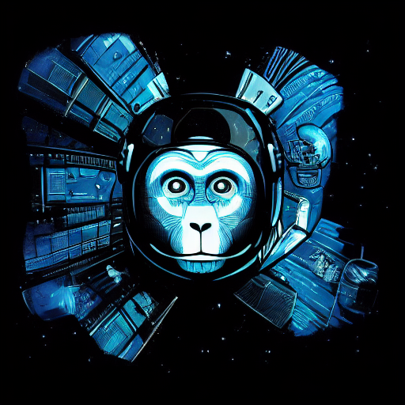

Главная
|  | Этот сайт создан участником Darkon Team - Никитой Куртековым (псевдоним N_I_K_I_T_OS или N_I_K_I_T_OSER). Сайт предназначен для размещения на нём различной информации, касающейся участников команды. Информация представлена как в виде самого сайта, так и в виде расположенных на нём файлов, доступных к скачиванию. |
Если вы здесь впервые, ознакомьтесь с разделом "Новоприбывшим". Там вы сможете узнать о правилах работы в команде.
В разделе "3D-Департамент" расположена документация, касающаяся (угадайте, кого?) 3D департамента.
Весь авторский контент на сайте подлежит лицензированию.
- Контент автора сайта распространяется под лицензией MIT. Подробнее: Лицензия
- Контент других авторов распространяется согласно правилам площадок, с которых он взят.